AVL树
什么是AVL树
AVL树又称为高度平衡的二叉搜索树，即自平衡二叉搜索树（Self-balancing binary search tree）
它能保持二叉树的高度平衡，尽量降低二叉树的高度，减少树的平均搜索长度，是二叉搜索树的一种改进算法
AVL树的查找、插入和删除在平均和最坏情况下都是O(log n)
平衡因子(BF，Balance Factor)
定义
- 每个节点的左子树的高度减去右子树的高度
计算公式
- 即BF(node) = hL-hR
- 在一棵AVL树中，BF(node)= -1,0,1
高度平衡（height balanced）
规定空树是高度平衡的且空树的高度为-1
如果T是一颗非空的树，TL和TR是其左子树和右子树，则当满足以下条件时T是高度平衡的
- TL和TR是高度平衡的
- 平衡因子的绝对值即| hL-hR |<=1，其中hL和hR分别是TL和TR的高度
旋转规则
添加节点
AVL树当且仅当检测到某一节点的平衡因子出错时进行旋转
下方令插入节点后平衡因子出错的节点为X，插入的节点为K
注意：X不一定是插入节点的爷爷节点，还可能是其他祖先节点
| 情况 | 说明 | 处理方式 |
|---|---|---|
| LL | 节点K插入到节点X的左孩子的左边 | 对节点X进行右旋 |
| RR | 节点K插入到节点X的右孩子的右边 | 对节点X进行左旋 |
| LR | 节点K插入到节点X的左孩子的右边 | 先对节点X的左孩子进行左旋，再对节点X进行右旋 |
| RL | 节点K插入到节点X的右孩子的左边 | 先对节点X的右孩子进行右旋，再对节点X进行左旋 |
示例
- LL
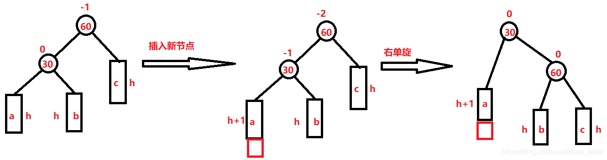
- RR
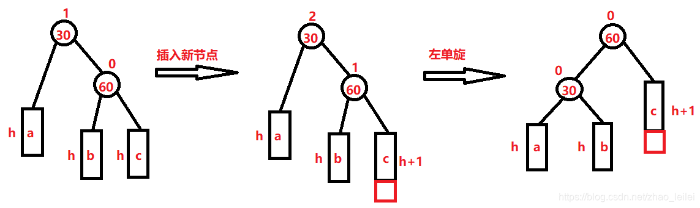
- LR
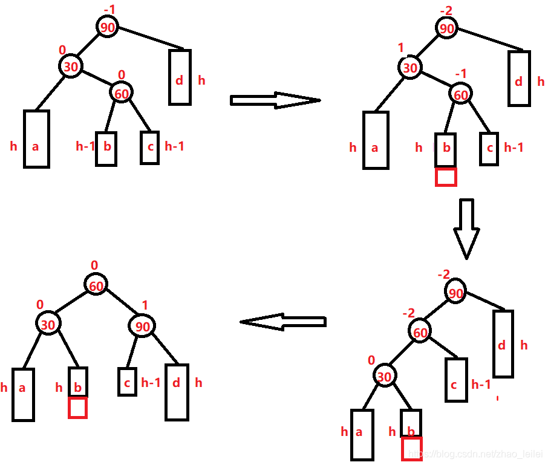
- RL
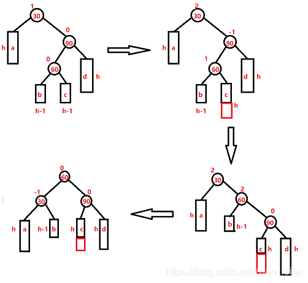
AVL树的最少节点数
当
删除节点
同二叉搜索树，即遵循以下步骤（以删除X节点为例）：
- 找到X节点
- 删除X节点
- 找到X节点的左子树的最大值，设为Y
- 用节点Y代替原先X节点的位置，即成为新的根
- 检查是否需要维护平衡因子
伸展树（Splay Tree）
伸展树的均摊时间复杂度是O(MlogN)
基本思想
考虑到局部性原理（刚被访问的内容下次可能仍会被访问，查找次数多的内容可能下一次会被访问），为了使整个查找时间更小，被查频率高的那些节点应当经常处于靠近树根的位置。
伸展树不需要保存节点的高度信息，这样能够节省存储空间。
旋转规则
插入操作
splay树插入的时候按照二叉搜索树规则插入，然后对插入的节点进行一次查找操作
查找操作的目的是将新插入的节点提升至根节点
查找操作
以被访问的节点X为例，假设节点P为节点X的当前父亲，节点G为X的当前爷爷
| 情况 | 调整方法 |
|---|---|
| P是根节点 | 直接旋转P和X |
| Zig-zag | 依次旋转P和X、G和X |
| Zig-zig | 绕着节点X做一次单旋 |
重复进行上述操作，直到X成为新的根节点
Zig-zag情况包含LR和RL，例如：
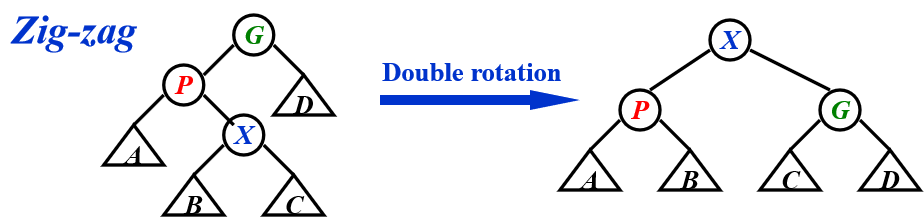
Zig-zig情况包含LL和RR，例如：
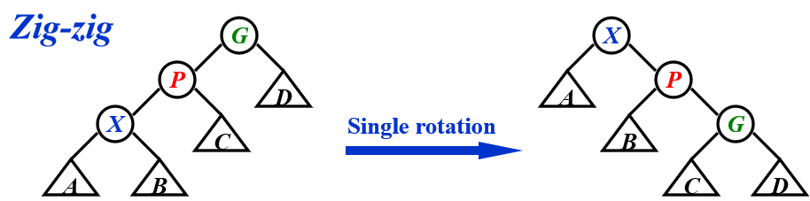
注意：以上所有旋转均遵循二叉搜索树性质
删除操作
对X节点进行一次查找操作
- 查找后X就成为了根节点
删除X节点
- 删去X节点后剩下左子树TL和右子树TR
找到左子树TL的最大值节点，令该节点作为左子树的根
令TR称为修改后的左子树根节点的右孩子
- 即成为左子树最大值的右孩子
平摊分析（Amortized Analysis）
什么是平摊分析
平摊分析是指在某种数据结构上完成一系列操作时，最坏情况下的平均时间
平摊分析与传统分析方法的主要差别为：
- 平摊分析时间与传统分析方法的平均情况下时间不同，它是最坏情况下的平均时间
- 平摊分析不涉及概率分析，即它只分析总体
- 平摊分析中时间函数T(n)，其中n指的是操作的次数，而不是输入的规模。
常见的有三种方法：聚集法、记账法、势能法。
聚合分析（Aggregate Analysis）
思想
聚合分析是把n个不同或相同的操作合在一起加以分析计算得到总时间的方法
即 n 个操作序列在最坏情况下的总时间记为T(n)，其中n为操作数。
由此得到在最坏情况下每个操作的平均时间为T(n)/n。
样例
以push、pop和multipop操作为例
push操作所需时间为1，pop操作所需时间为1，multipop操作所需时间为min(sizeof(S),k)，其中S为栈中剩余元素，k为出栈次数
则由聚合分析的思想可得：由于pop操作和multipop操作均需由push次数决定，在最差情况下将进行n/2次push和n/2次multipop，则时间T=n，故每个操作的平摊时间为T(n)/n=O(1)
会计分析（Accounting Analysis）
思想
会计分析也称为记账分析，分析思想是先对每个不同的操作核定一个不同的费用（时间），然后计算n次操作总的费用。
由于所得费用是人为规定的，因此会出现得到松上界的情况。使得所得的操作费用可能与实际费用不符
对于松上界存在二种情况：
- 超额收费：核定费用>实际费用，此时差额存放在该对象的身上。
- 收费不足：核定费用<实际费用，此时差额由该对象身上的存款支付
费用的核定(平摊核定)是否正确需检查n次操作核定总费用是否大于n次操作实际总费用。因此，在记账方法中，某些操作的费用比它们实际代价或多或少，但所求得的平摊时间复杂度是相同的
样例
以push、pop和multipop操作为例
由于push操作决定了另外两种操作的操作次数，则可令push操作费用为+2，则pop和multipop操作的费用为0（该费用由push承担了），故平摊时间仍为O(1)
势能分析（Potential method）
思想
势能分析通过定义一个势能函数，用于评价数据结构某个状态的势能，把每个操作的时间复杂度加上操作导致的势能变化作为摊还复杂度，如果经过了一系列操作以后，势能不减少，这一系列操作的时间复杂度之和不大于这一系列操作的摊还复杂度之和。
第i个操作的摊还代价Ci’ = Ci(第i个操作的实际代价) + 当前数据结构的总势能 - 进行第i个操作之前的数据结构的总势能，即
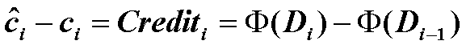
则
总摊还代价（即摊还复杂度）= 所有操作的实际代价（实际时间复杂度）+ 进行所有操作后的数据结构总势能 - 原数据结构总势能
即

如果势能函数满足数据结构总势能 - 原数据结构总势能 >= 0，则总摊还代价是总实际代价的一个上界。
其中势能是由势能函数所求得的。而势能函数是由使用者根据实际情况所规定的。
一个好的势能函数应该总是假设它的最小值在序列的开头
样例
略
红黑树（Red-Black Trees）
红黑树的性质
红黑树是一棵满足下列红黑属性的二叉搜索树
- 每个节点要么是红的要么是黑的
- 根节点是黑的
- 每个叶节点（即空节点）是黑的
- 如果一个节点还是红的，那么他的孩子都是黑的
- 对于每个节点，从该节点到子代叶节点的所有的最短路径包含相同的黑节点数
红黑树可以在O(log n)时间内做查找，插入和删除
红黑树从根到叶子的最长路径不会超过最短路径的2倍
黑高（black-height）
黑高是从x（不包含x）到任意子代叶节点的黑节点的数量，节点x的黑高记为 bh(x)。其中bh(Tree) = bh(root)
调整规则
插入节点
插入节点时将新插入的节点视为红色进行插入
| 代码 | 情况 | 调整方法 | 口诀 |
|---|---|---|---|
| 1 | 新节点即根节点 | 将新节点变色为黑色 | 新根即黑 |
| 2 | 新节点的父节点是黑色 | 将插入的新节点设为红色即可 | 父黑调红 |
| 3 | 新节点的父节点和叔节点都是红色 | 将新节点的父节点和叔节点变为黑色，将新节点的祖父节点变为红色，之后从祖父节点开始依次检查上去，直到整棵树均满足红黑树规则 | 父叔均红爷变红 |
| 4 | 新节点的父节点是红色，叔节点是黑色或者没有叔节点，且祖父节点到新节点的关系为左右 | 以父节点为轴，做一次左旋，变为情况5，然后根据情况5进行处理即可 | 父红叔黑爷左右，父旋完后再处理 |
| 5 | 新节点的父节点是红色，叔节点是黑色或者没有叔节点，且祖父节点到新节点的关系为左左 | 以祖父节点为轴，进行一次右旋，使原先的父节点成为祖父节点，然后将原来的祖父节点变为红色，将原来的父节点变为黑色 | 父红叔黑爷左左，爷旋红，父变黑 |
| 6 | 右左，为情况4的镜像 | 略 | |
| 7 | 右右，为情况5的镜像 | 略 |
删除节点（未梳理完）
参考红黑树删除操作 - Jacc.Kim - 博客园 (cnblogs.com)
| 代码 | 情况 | 调整方法 |
|---|---|---|
| 1 | 如果待删除节点有两个非空的孩子节点 | 用右子树中最小的节点替代待删除节点，并将该节点的颜色变成待删除节点的颜色，将原问题转化成其他情况的问题 |
| 2 | 如果待删除节点为红色且只有一个孩子或者没有孩子 | 直接删除待删除节点 |
| 3 | 如果待删除节点是黑色，唯一子节点一定是红色 | 将待删除节点删除，并将子节点颜色改变成黑色 |
| 4 | 如果待删除节点是黑色，没有孩子[1]，且待删除节点的兄弟节点为红色[2] | 将待删除节点的父亲节点左旋，使得兄弟节点处于原来父亲的位置，并将原来的父亲节点变为红色，原来的兄弟节点变为黑色，此时会发现待删除节点的现在兄弟节点的颜色为黑色[3]，即转化为情况5[4] |
| 5 | 如果待删除节点是黑色，没有孩子，且待删除节点的兄弟节点为黑色，父亲节点为红色 | 删除待删除节点，将其兄弟节点调整为红色，之后进行旋转操作，使原来的父节点作为原来的兄弟节点的孩子 |
| 如果待删除节点是黑色，没有孩子，且待删除节点的兄弟节点为黑色，父亲节点为黑色 | 将待删除节点删去后，将其兄弟节点染为红色，然后递归检查其祖先节点的情况，如果有需要修正的则按照各个情况进行修正 | |
[1] 因为待删除节点最多只有一个孩子，因此如果它自己为黑色，则黑高为1，此时如果具有有孩子，则只能为红色，如果为黑色则黑高不相等，不符合红黑树定义
[2] 兄弟为红色意味着他们的父亲只能为黑色
[3] 此时待删除节点的兄弟节点为其原兄弟节点的孩子
[4] 操作的目的是将待删除节点的兄弟节点转变为黑色
红黑树与AVL树的区别
AVL树是严格平衡二叉树，要求每个节点的左右子树高度差不超过1，
红黑树条件更宽松一点，要求任何一条路径的长度不超过其他路径长度的两倍
AVL树的查找效率更高，平衡调整的成本更高
在频繁查找时应选用AVL树，在频繁插入删除时，应选用红黑树
B+树
B+树的结构
一棵M阶的B+树满足下列的结构属性：
- 根节点要么是叶子，要么有2~M个孩子
- 所有的非叶节点(除了根节点)有M/2(向上取整)到M个孩子
- 所有的叶节点都是在相同深度的
B+树的特点
B+树主要被应用于数据库的索引结构，B+树只有叶节点存放数据，其余节点只存放索引
B+树的添加
遵循分裂策略
最初当B+树是一棵空树时，根节点作为第一个叶子节点，在根节点中添加键值即可
当叶子节点中键值达到了M+1时将其等分(一般将较少的部分拆分到左边)，将右子树的最小值作为键值，按照按照此策略依次进行后续添加
B+树的删除
遵循合并原则
当B+树删除叶子中的一个值时，如果该叶子中还有不少于2个值，则可无需进行任何操作
当删除后叶子只剩一个值，则将其合并至相邻叶子节点，然后按照添加规则进行修改，如果某一个节点只剩一个叶节点，则将该叶节点合并到相邻节点，并取消该节点的父亲
2-3树易错点整理
当只有root一个节点时，root没有孩子
B+树的深度和查找的时间复杂度
- Depth(M, N) = O( ⌈ log⌈M/2⌉N ⌉ )
- TFind (M, N) = O( logN )
颠倒文件索引(Inverted File Index)
术语文档关联矩阵（Term-Document Incidence Matrix）
- 实现方式
将文档依次编号，然后检索每一个术语是否出现在文档中，如果出现，则该矩阵对应值为1，如果未出现，则为0。如下表所示
| 1 | 2 | 3 | 4 | |
|---|---|---|---|---|
| a | 0 | 1 | 1 | 1 |
| arrived | 0 | 0 | 1 | 1 |
| damaged | 0 | 1 | 0 | 0 |
| delivery | 0 | 0 | 1 | 0 |
颠倒文件索引
颠倒文件索引是术语文档关联矩阵的紧凑版本
- 索引(Index)
索引是一种在文本中定位给定术语的机制（mechanism）
- 倒排文件(Inverted file)
倒排文件包含一个指向所有出现过对应术语的文本的指针列表
倒排文件也叫倒排索引，是一种利用属性值来确定记录位置的方式
- 实现方式
将术语编号，并将术语作为关键词，记录下出现过该术语的文档和术语在所有文档中出现的次数（一个文档最多记一次次数），如下表所示
| No. | Term | Times; Documents |
|---|---|---|
| 1 | a | <3; 2,3,4> |
| 2 | arrived | <2; 3,4> |
| 3 | damaged | <1; 2> |
| 4 | delivery | <1; 3> |
| 5 | fire | <1; 2> |
在用户输入关键词后，取所有关键词的文档交集，返回的文档编号即符合要求的文档
- 优化方式
对于该方式，由于是取所有关键词的文档交集，可以采用优先检索出现频率少（即包含该关键词的文档数量少的关键词）的关键词的方法，可以有效增加检索速度
- 索引生成算法
xxxxxxxxxxwhile ( read a document D ) { while ( read a term T in D ) { if ( Find( Dictionary, T ) == false ) Insert( Dictionary, T ); Get T’s posting list; Insert a node to T’s posting list; }}Write the inverted index to disk;读取术语后需要进行的操作
- 词干提取(word stemming)
对一个单词进行处理，使其还原成词根的形式
具体操作
- 将术语拆分成若干个单词
- 处理每个单词，使其只剩下词干或词根形式
- 寻找停止词（stop word）
有些词非常常见，几乎每个文档都包含它们，例如“a”和“it”。为它们编制索引是无用的。它们被称为停止语。我们可以从原始文件中删除它们。
- 存储索引的方式
xxxxxxxxxxBlockCnt = 0; while ( read a document D ) { while ( read a term T in D ) { if ( out of memory ) { Write BlockIndex[BlockCnt] to disk; BlockCnt ++; FreeMemory; } if ( Find( Dictionary, T ) == false ) Insert( Dictionary, T ); Get T’s posting list; Insert a node to T’s posting list; }}分布式索引
术语分割索引（Term-partitioned index）
将所有的术语按照首字母存储在不同的服务器上，需要检索的时候则先检索每一台服务器上的单词，然后进行归并运算
文档分割索引（Document-partitioned index）
将文档按照一定的数量分别存放在各个服务器上，然后检索的时候搜索对应的服务器即可。即将文件号为一个范围内的文件存在一个节点上
动态索引
实现方式
随着时间的推移，文档逐渐加入，之后对加入的文档进行如下操作
- 对词典中已有的术语进行更新
- 加入原词典中未有的术语
如果文档被删除则将该文档做标记
优化方式
可以利用主索引和辅助索引（auxiliary index）配合检索，主索引负责存储原有的索引，数据较难更改，辅助索引负责查找新的文档
关键词压缩
- 将所有关键词去除停止词后压缩成一串字符串进行查找
优化倒排列表（Posting List）
- 即按照各个文档编号之间的关系存储文档编号(例如编号差值)，而非直接存储编号，这样避免了文档编号过大所带来的的空间开销
设置搜索引擎的搜索阈值（Thresholding）
对文档设置阈值
即仅仅检索并返回关联度最高的x篇文档
缺点
- 由于截断，我们可能会错过一些相关文件
- 对于Boolean queries不可行
对查询设置阈值
- 按频率升序对查询词进行排序或只根据原始查询词的某个百分比进行搜索
搜索引擎的核心要素
索引速度
- 即每小时能够检索的文档数
搜索速度
- 延迟是索引大小的函数
查询语言的表达能力
- 即能够表达复杂的信息需求或加快复杂查询的速度
用户幸福感
数据检索(data retrieval)性能评估依据
- 响应时间
- 索引空间
- 注意：数据检索性能评估要在确定性能之后才能进行
信息检索(information retrieval)绩效评估依据
- 答案集的相关性
注意data retrieval和information retrieval的区别，会考
衡量关联性（relevance）的要素
- 基准文档集
- 一组基准查询
- 对每个查询文档对进行相关或不相关的二元评估
| Relevant | Irrelevant | |
|---|---|---|
| Retrieved | RR | IR |
| Not Retrieved | RN | IN |
Precision(查准率) P = RR / (RR + IR)
Recall(查全率) R = RR / (RR + RN)
precision和recall一般成负相关
最左堆（leftist heaps）
基本概念
目标
- 在O(N)的时间复杂度内加速归并
NPL(null path length)
- Npl(X)指节点X到任意叶节点的最短路径
- 注意：Npl(NULL)=-1
- Npl(X) = min { Npl(C) + 1 for all C as children of X }
最左堆定义
- 最左堆定义为在堆中的每个节点X的左子树的Npl不小于右子树的Npl
最左堆相关定理
定理
- 右路径上具有r个节点的最左堆至少有2r-1个节点（可用归纳法证明）
最左堆的好处
- 我们能在右路径上进行所有的工作，从而使其时间复杂度降低
最左堆实现步骤
归并操作递归版本
基本操作
Merge( H1->Right, H2 )
- 此处以H1>H2为例
- 注意，此处归并并非只做一次，而是递归归并
Attach( H2, H1->Right )
Swap(H1->Right, H1->Left ) if necessary
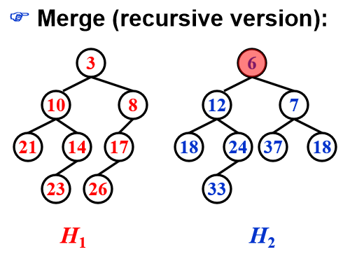
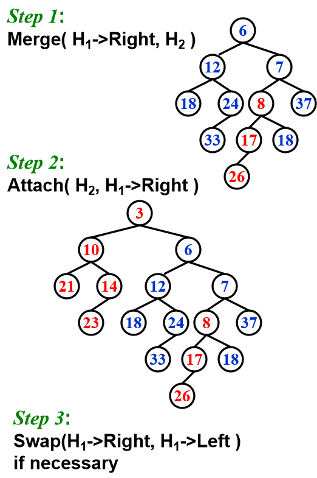
- 伪代码：
xxxxxxxxxxPriorityQueue Merge ( PriorityQueue H1, PriorityQueue H2 ){ if ( H1 == NULL ) return H2; if ( H2 == NULL ) return H1; if ( H1->Element < H2->Element ) return Merge1( H1, H2 ); else return Merge1( H2, H1 );}static PriorityQueueMerge1( PriorityQueue H1, PriorityQueue H2 ){ if ( H1->Left == NULL ) /* single node */ H1->Left = H2; /* H1->Right is already NULL and H1->Npl is already 0 */ else { H1->Right = Merge( H1->Right, H2 ); /* Step 1 & 2 */ if ( H1->Left->Npl < H1->Right->Npl ) SwapChildren( H1 ); /* Step 3 */ H1->Npl = H1->Right->Npl + 1; } /* end else */ return H1;}归并操作迭代版本
基本操作
- Sort the right paths without changing their left children
- Swap children if necessary
删除根节点操作
- Delete the root
- Merge the two subtrees
时间复杂度
合并两个左堆的时间复杂度为
删除根节点的时间复杂度为
注意：迭代版本和递归版本的归并操作时间复杂度均相同，但迭代版本效率高一点
斜堆（skew heaps）
skew heaps特点
斜堆是最左堆的一个简化版本，斜堆不需要存储Npl信息
斜堆在合并的时候始终交换左右子节点，除非右路径上最大的节点没有交换其子节点
skew heaps定义
- 只有一个元素的堆是斜堆
- 两个斜堆通过斜堆的合并操作，得到的结果仍是斜堆
合并斜堆
注意：插入斜堆是合并斜堆的一个特例，因此不独立进行分析
递归实现
- 如果一个空左倾堆和一个非空左倾堆合并，返回非空左倾堆
- 如果两个左倾堆都非空，那么比较两个根节点，取较小的节点为新的根节点，将较大堆的根节点作为其右孩子
- 交换根节点的右子堆和左子堆
- 之后递归比较原较小根节点堆的右子堆和原较大根节点堆的右子堆，重复上方步骤递归合并
以下为合并H1和H2的结果图
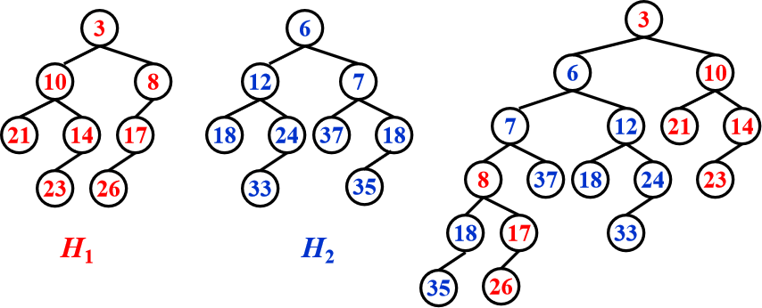
迭代实现
- 分别把两个堆的右路径上所有节点的右子树分离出来。
- 把分离出来的子树按根节点元素升序（广义上的升序）排列。
- 交换倒数第二个树的左右子树，把最后一个树作为倒数第二个树的左子树，之后重复此操作依次向前直到最小根元素为止
时间复杂度
merge操作的时间复杂度：摊还时间为O(logN)，最坏情况为O(N)
skew heaps注意点
- 倾斜堆的优点是无需额外的空间来保持路径长度，也无需测试来确定何时交换子级
- 精确确定左堆和斜堆的预期右路径长度是一个开放的问题。
- 如果将节点1到2k-1插入一个空的最小歪堆，则所得到的树始终是一个满二叉树
二项队列
二项队列介绍
二项队列不是一棵树，它是一个森林，由一组堆树按照一定顺序组成的森林
二项队列的性质
- 每一颗树都是一个有约束的堆序树，叫做二项树
- 高度为k的第k个二项树Bk由一个根节点和B0, B1, .......Bk-1构成
- 高度为k的二项树的结点个数为2k
我们可以用二项树的结合表示任意大小的优先队列。例如，大小为13的优先队列就可以用B3，B2，B0来表示，二进制的表示为1101
- 二项队列实例
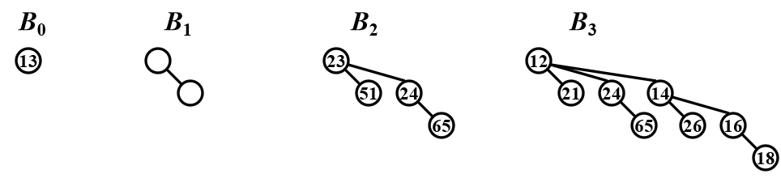
二项队列定理
一个有着N个元素的二项队列可以通过N次成功的插入操作从而在O(N)的时间内生成
二项队列的操作
查找最小值
二项队列的最小值为某一个二项树的根
在这里最多有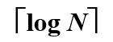个根
因此查找的时间复杂度为
归并操作
从B0开始进行归并，两个同样的Bk进行归并，根节点值较小的作为新的根节点，生成一颗新的树Bk+1
时间复杂度为
插入操作
插入操作是归并操作的特殊情况，略
因为插入N个值的最差情况是O(N)，因此插入操作的均摊时间复杂度为O(1)
删除最小值操作
进行一次查找最小值操作，令最小值在Bk上
- 需要O(log N)时间
将Bk暂时从二项森林 H 中去除，令剩余的二项树的森林为 H’
- 需要O(1)时间
从Bk中将根去除，令得到的二项树的森林为H’‘
- 需要O(log N)时间
归并H‘和H’‘
- 需要O(log N)时间
因此删除操作的时间复杂度为
二项队列代码结构
xtypedef struct BinNode *Position;typedef struct Collection *BinQueue;typedef struct BinNode *BinTree; /* missing from p.176 */
struct BinNode { ElementType Element; Position LeftChild; Position NextSibling;} ;
struct Collection { int CurrentSize; /* total number of nodes */ BinTree TheTrees[ MaxTrees ];} ;
BinTree CombineTrees( BinTree T1, BinTree T2 ){ /* merge equal-sized T1 and T2 */ if ( T1->Element > T2->Element ) /* attach the larger one to the smaller one */ return CombineTrees( T2, T1 ); /* insert T2 to the front of the children list of T1 */ T2->NextSibling = T1->LeftChild; T1->LeftChild = T2; return T1;}
BinQueue Merge( BinQueue H1, BinQueue H2 ){ BinTree T1, T2, Carry = NULL; int i, j; if ( H1->CurrentSize + H2-> CurrentSize > Capacity ) ErrorMessage(); H1->CurrentSize += H2-> CurrentSize; for ( i=0, j=1; j<= H1->CurrentSize; i++, j*=2 ) { T1 = H1->TheTrees[i]; T2 = H2->TheTrees[i]; /*current trees */ switch( 4*!!Carry + 2*!!T2 + !!T1 ) { case 0: /* 000 */ case 1: /* 001 */ break; case 2: /* 010 */ H1->TheTrees[i] = T2; H2->TheTrees[i] = NULL; break; case 4: /* 100 */ H1->TheTrees[i] = Carry; Carry = NULL; break; case 3: /* 011 */ Carry = CombineTrees( T1, T2 ); H1->TheTrees[i] = H2->TheTrees[i] = NULL; break; case 5: /* 101 */ Carry = CombineTrees( T1, Carry ); H1->TheTrees[i] = NULL; break; case 6: /* 110 */ Carry = CombineTrees( T2, Carry ); H2->TheTrees[i] = NULL; break; case 7: /* 111 */ H1->TheTrees[i] = Carry; Carry = CombineTrees( T1, T2 ); H2->TheTrees[i] = NULL; break; } /* end switch */ } /* end for-loop */ return H1;}ElementType DeleteMin( BinQueue H ){ BinQueue DeletedQueue; Position DeletedTree, OldRoot; ElementType MinItem = Infinity; /* the minimum item to be returned */ int i, j, MinTree; /* MinTree is the index of the tree with the minimum item */
if ( IsEmpty( H ) ) { PrintErrorMessage(); return –Infinity; }
for ( i = 0; i < MaxTrees; i++) { /* Step 1: find the minimum item */ if( H->TheTrees[i] && H->TheTrees[i]->Element < MinItem ) { MinItem = H->TheTrees[i]->Element; MinTree = i; } /* end if */ } /* end for-i-loop */ DeletedTree = H->TheTrees[ MinTree ]; H->TheTrees[ MinTree ] = NULL; /* Step 2: remove the MinTree from H => H’ */ OldRoot = DeletedTree; /* Step 3.1: remove the root */ DeletedTree = DeletedTree->LeftChild; free(OldRoot); DeletedQueue = Initialize(); /* Step 3.2: create H” */ DeletedQueue->CurrentSize = ( 1<<MinTree ) – 1; /* 2MinTree – 1 */ for ( j = MinTree – 1; j >= 0; j – – ) { DeletedQueue->TheTrees[j] = DeletedTree; DeletedTree = DeletedTree->NextSibling; DeletedQueue->TheTrees[j]->NextSibling = NULL; } /* end for-j-loop */ H->CurrentSize – = DeletedQueue->CurrentSize + 1; H = Merge( H, DeletedQueue ); /* Step 4: merge H’ and H” */ return MinItem;}回溯算法(Backtracking)
回溯算法本质上就是dfs+剪枝(pruning)
主要难点在于剪枝，具体说明略
α pruning
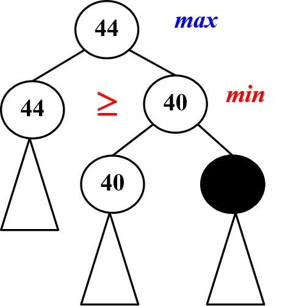
即爷节点求最大值，子节点求最小值时，如果右孩子的任意孩子中已经有节点小于左孩子的最小值，则直接进行剪枝
β pruning
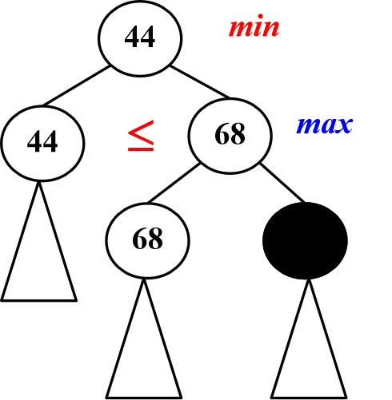
α-β pruning
即两种剪枝的结合
分治算法(Divide and Conquer)
分支算法就是将一个问题递归调地分解成若干个子问题，然后对于子问题进行求解，最后依次合并求解的结果得到最优解
朴素的递归式：
递归时间复杂度分析
递归树法
递归树法主要用于求解递归的时间复杂度问题
递归树本质就是将所有的递归情况转化成一棵树，针对该树的每一层计算所需的时间复杂度，最后将所有层的时间复杂度相加即可
注意：递归树所求的时间复杂度可以是一个范围，但是数量级要相同
主定理(Master Theorem)
主定理适用于求解如下递归式算法的时间复杂度：
其中：
- n 是问题规模大小；
- a 是原问题的子问题个数；
- n/b 是每个子问题的大小，这里假设每个子问题有相同的规模大小；
- f(n) 是将原问题分解成子问题和将子问题的解合并成原问题的解的时间。
- 对上面的式子进行分析，得到三种情况：
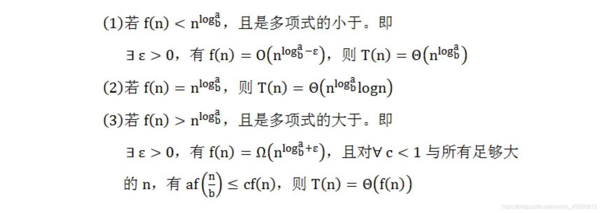
- 其他形式的主定理(更常用)
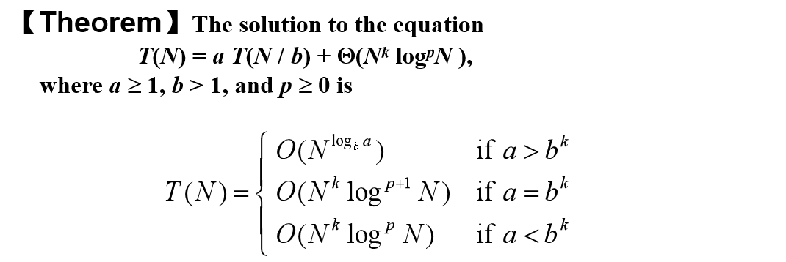
动态规划
动态规划的本质是用存储空间记录子问题的结果，避免重复的运算，是一种以空间换时间的算法
动态规划使用表代替了递归
这部分的几个案例还没详细看，PTA也还没做，晚点得记得
贪心算法
优化问题
给定一组约束条件和一个优化函数。满足这些约束的解称为可行解。优化函数具有最佳可能值的可行解称为最优解。
贪心算法
在某些贪婪的标准下，在每个阶段做出最佳决策。在一个阶段做出的决策在以后的阶段不会改变，因此每个决策都应该确保可行性
注：
贪婪算法仅在局部最优值等于全局最优值时有效。
贪婪算法不能保证最优解。然而，它通常会产生非常接近最优值（启发式）的解决方案，因此在寻找最优解决方案花费太多时间时，直觉上很有吸引力。
贪心策略的要素
将优化问题转化为一个我们做出选择，只剩下一个子问题要解决的问题
证明贪婪选择的原问题总是存在一个最优解，使得贪婪选择总是安全的
证明最优子结构
即证明在我们做出贪婪的选择后，剩下的问题是原问题的一个子问题
- 该子问题的性质是：将子问题的最优解与所做的贪婪选择相结合后得到的是原问题的最优解
霍夫曼编码
霍夫曼编码主要用于文件压缩，它是一种变长编码(即不等长编码)
- 把出现频率高的用短的01串来编码，以达到压缩路径的目的
- 需要保证没有一个字符是另一个字符的前缀，否则存在多种解码方式
- 等长编码：N个字母需要
活动安排问题
动态规划方法
方法1：
- n个事件a1-an, Cij 表示第i和第j个事件之间能安排的最多的事件数目
- 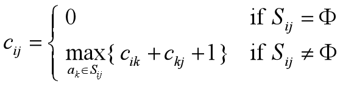
- 时间复杂度为
方法2
- 这里k(j)是距离aj最近的不冲突活动，并且要在aj之前完成
- 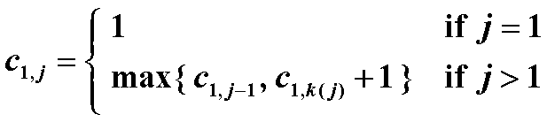
贪心算法的选择
总是选择开始最早的---错
选择持续时间最短的活动---错
跟别的活动冲突最少---错
选择尽早结束的活动--对
选择最迟开始的活动--对
- 规律：每个子问题中活动结束最早的一定会包含在最优解当中
P与NP
确定性图灵机：对于给定的输入每一步的执行都是唯一的图灵机
不确定性图灵机：对于给定的输入可以自由选择执行的下一步，并且会选择正确的solution
P问题
- 如果一个问题可以找到一个能在多项式时间内解决的算法，那么该问题属于P问题
- P类问题就是所有复杂度为多项式时间的问题的集合
NP问题(非确定多项式时间问题)
所有能在多项式时间内使用非确定性算法（non-deterministic）解决的问题
- 表述为用非确定图灵机可以在多项式时间内解决的问题
可以在多项式的时间内验证问题的任意解是对的
简单来说就是，必须以非常规方法才能在多项式时间内解决的问题叫做NP问题
- 通常它们的时间复杂度都是指数变量
- 注意：可描述的问题不全是NP问题
NPC(NP Complete，NP完全)问题
性质：一个NPC(NP完全)问题可以从任何NP问题通过多项式规约得到
- 约化后时间复杂度增加，问题应用范围增加
NP完全问题只能通过非确定性算法，在多项式时间内解决的问题
- 如果任何一个NP问题都能通过一个多项式时间算法转换为某个NP问题，那么这个NP问题就称为NPC问题
- 如果我们可以在多项式时间内解决任意一个NPC问题，那么我们就可以在多项式时间内解决所有NP问题
NPC问题的定义
- 该问题是一个NP问题
- 所有的NP问题都可以约化到它
证明NPC问题
- 证明该问题至少是一个NP问题
- 证明其中一个已知的NPC问题能约化到它(由约化的传递性)
NPC问题示例
Hamiltonian cycle problem(哈密顿回路问题)
Circuit SAT
- 第一个被证明为是NPC问题
顶点覆盖问题
SAT(Satisfiability problem)
最大团问题
NP Hard问题
NP Hard问题满足NPC问题定义的第二条但不一定要满足第一条，即
- 所有NP问题都可以约化到它
- 它不一定是NP问题
所以NP Hard问题包含了NPC问题。
若A为NP-Hard，A可以规约到B，则B为NP-Hard
四个问题之间的关系
- P是可以在多项式时间内解决的问题
- NP是可以在多项式时间内验证一组特定的解是否正确的问题
- NP-hard问题是NP问题可以通过多项式归约得到的一个较为复杂的问题
- NPC问题就是NP问题归约之后得到的，NPC问题既是NP又是NP-hard
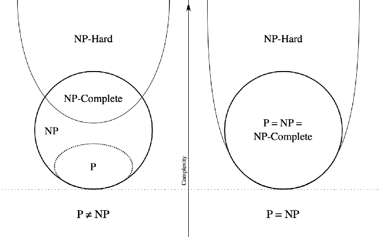
形式化语言描述
co-NP 是所有满足L的补和L本身都是NP问题的形式化语言L所构成的集合
注意：四种问题之间的关系
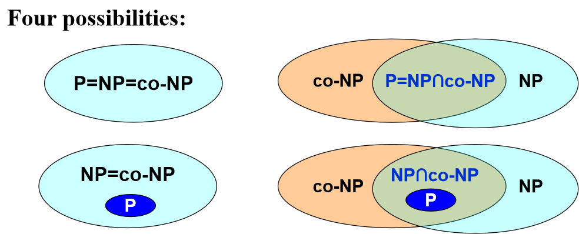
SAT问题
SAT问题就是给定n个布尔变量 ，从他们本身和他们的否中选出K组，每组m个变量，小组取并集，大组取交集，要求让最后的结果是1，这样的叫做 m-SAT 问题
如果最大团问题是NPC问题，则顶点覆盖问题也是NPC问题
- 转化方式是一个图G如果有大小为K的最大团当且仅当G的补图有一个大小为 |V|-K 的顶点覆盖
近似算法
基础内容
如何绕过NP完全问题
如果N很小，甚至
求解多项式时间中一些重要的特殊情况
找到多项式时间内找到接近最优解的解法
- 近似算法
近似比(Approximation Ratio)
定义：对于任意大小为n的输入，算法生成的解的代价C在最优解代价C*的p(n)因子之内，则该算法的近似比为
- 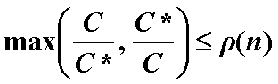
如果一个算法实现一个p(n)的近似比，那么我们称这个算法为p(n)近似算法
近似模式(approximation scheme)
- 优化问题的近似模式是一种近似算法，它不仅将问题的实例作为输入，还将一个值 ε > 0作为输入，这样对于任何固定的 ε ，该方案都是(1+ ε )近似算法
多项式时间近似模式(PTAS)
- 对于任意一个固定的 ε > 0，该模式运行在其输入实例大小为
- 对于任意一个固定的 ε > 0，该模式运行在其输入实例大小为
完全多项式时间近似模式(FPTAS)
- 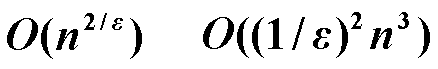
近似装箱问题(Approximate Bin Packing)
问题描述
给定N个尺寸为S1, S2，…， SN的物品，对于所有的 1 <= i <= N 都有 0 < Si <= 1 成立。用最少数量的箱子包装这些物品，其中每个箱子为单位容量
Next Fit

定理：设 M 是装一列物品 I 所需的最优箱子数。那么 next fit 永远不会使用超过 2M - 1 个箱子，因此必定存在这样的序列，使得 next fit 使用 2M - 1 个箱子
First Fit
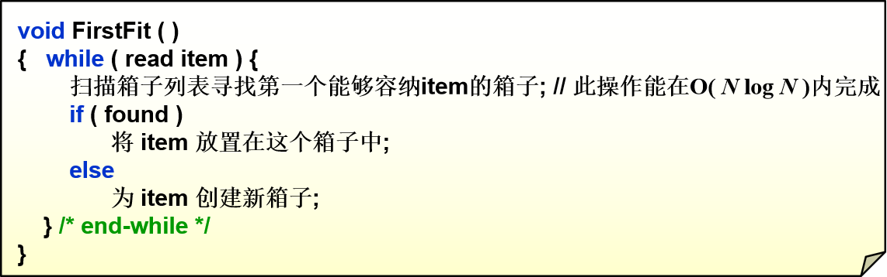
定理
设 M 是装一列物品 I 所需的最优箱子数。那么 first fit 不会使用超过
Best Fit
在所有箱子中最 tightest 的地方放置一个新物品
时间复杂度为 O( N log N )
箱子编号不大于 1.7M
On-line Algorithms
在线算法即不知道整个物品列表，物品会一个一个到来的情况
有一些输入迫使任意 On-line Algorithms 对于每个输入，至少使用 5/3 个最优箱子
Off-line Algorithms
在给出答案之前查看整个项目列表
对于大量的物品，我们可以将 item 排成一个大小不增的序列。 然后应用 first fit 或 best fit
定理:设 M 是装一列物品 I 所需的最优箱子数。那么 first fit decreasing 从不使用超过11M/9 + 6/9 个箱子，因为存在这样的序列使得 first fit decreasing 使用 11M/9 + 6/9 个箱子。
分数背包(Knapsack)问题
存在一个容量为 M 的背包。给定 N 个 item 。每一个 item 都有权重 wi 和利润 pi 。如果 xi 是将被包装的 itemi 的百分比，那么包装利润将是 pixi
最优包装是一种利润最大的可行包装。也就是说，我们要求出 xi 的值，使得 所有 pixi 之和( i 的范围为1到n ) 得到它在约束条件下的最大值
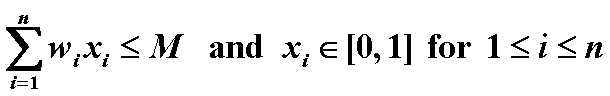
01背包问题
顶点覆盖问题
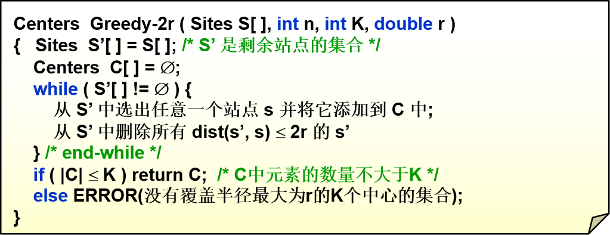
定理
假设算法选择了超过 K 个中心。那么对于大小不超过 K 的任何集合 C* ，覆盖半径为 r(C*) > r
由于解法的半径为 2r1，则该问题为 2-approximation 问题
定理：除非P = NP，否则对于中心选择问题不存在 p-approximation， p < 2
局部搜索
局部搜索算法和贪心算法是有区别的，贪心算法不是局部搜索的特例
局部搜索的框架Local Search Framework
Local：
- 局部最优解是邻域(neighborhood)中的最佳解
- 定义邻居关系：S ~ S’: S’是S的邻接解，S’可以通过对S的小修改获得
- N(S): S的邻域
Search：
- 在领域中从一个点出发，找到局部最优的解，如果无法改善，就是局部最优
- gradient descent —— 梯度下降法，找梯度下降最快的方向来优化
框架
xxxxxxxxxxSolutionType Gradient_descent(){ Start from a feasible solution S FS ;MinCost = cost(S);while (1) {S’ = Search( N(S) ); /* find the best S’ in N(S) */CurrentCost = cost(S’);if ( CurrentCost < MinCost ) {MinCost = CurrentCost; S = S’;}else break;}return S;}
顶点覆盖问题
问题描述：在无向图G中找出最小的点集S，对于G的每一条边，至少有一个顶点在S中
快速得到可行解：直接取所有的顶点，此时的 cost(S)=|S|
S'是S的邻居，如果S'可以从S中去掉一个点得到
搜索方法：从S=V开始，每次删除一个点并且检查是否为最小覆盖
梯度下降法不一定行得通，可以使用Metropolis Algorithm改进
梯度下降法是定向选择邻居，而metropolis是随机选择邻居的算法
Metropolis Algorithm
xxxxxxxxxxSolutionType Metropolis(){ Define constants k and T;Start from a feasible solution S FS ;MinCost = cost(S);while (1) {S’ = Randomly chosen from N(S);CurrentCost = cost(S’);if ( CurrentCost < MinCost ) {MinCost = CurrentCost; S = S’;}else {With a probability , let S = S’;else break;}}return S;}
Hopfield Neural Networks(神经网络)
无向图G中的边带有权重wi, wi是正数时两个节点状态不同，是负数时节点状态相同，wi的大小表示requirement的strength
可能没有符合所有边缘要求的配置
定义好边和坏边(好边就是wi是正数的边)
对于一个顶点，如果其好边数大于坏边数则称之为满足的，如果所有点都是满足的，那么这个图就是稳定的
state-flipping算法
xxxxxxxxxxConfigType State_flipping(){Start from an arbitrary(任意的) configuration S;while (!IsStable(S) ) {u = GetUnsatisfied(S);su = - su;}return S;}该算法最多有
Max Cut Problem
在无向图G中找到一个分割(A,B),使得 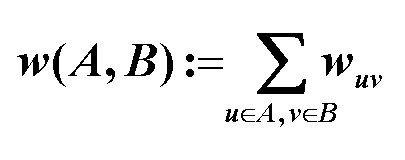最大
可行解：任何一种分割方案w(A, B)
邻居的定义：S'可以由S在两个分割AB之间移动一个点得到，实际上是Hopfield Neural Network的一种特殊情况(即wi全是正数的情况)
定理：局部最优解的权重和不会低于全局最优解的一半, 即w(A, B) >= ½ w(A, B)
big-improvement-flip算法：当新的局部最优解的增长的幅度小于 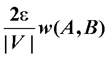的时候就停止，为了让算法可以在多项式时间内结束
- 这样以来就有(2 + ε ) w(A, B) >= w(A, B)
- 最多 O(n/ ε log W) 次flips之后就可以停下来
最大分割问题存在近似于为1.1382的逼近算法，但是没有近似率低于 17/16 的
随机算法
用随机的决策来处理最坏的情况
基本的性质
- 总是产生正确答案的高效确定性算法是高效随机算法的一个特例
- 高校随机算法只需要以高概率产生正确答案
- 随机化算法总是正确的，并按预期高效运行
- Symmetry-breaking among processes in a distributed system
雇佣问题
总的cost=天数N * 每天面试的花费 + 雇佣的人数M*雇佣费用
一种简单的算法
只要面试的人比之前面试的人中面试表现最好的高就雇佣，一开始设候选人0的面试表现为最佳。注意候选人0不会被录取
xxxxxxxxxxint Hiring ( EventType C[ ], int N ){ /* candidate 0 is a least-qualified dummy candidate */int Best = 0;int BestQ = the quality of candidate 0;for ( i=1; i<=N; i++ ) {Qi = interview( i ); /* Ci */if ( Qi > BestQ ) {BestQ = Qi;Best = i;hire( i ); /* Ch */}}return Best;}时间复杂度是 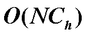
但这种算法在参加者的质量递增的时候会不work因此我们可以采用随机的办法改进
如果参加面试者的顺序是随机的
随机化假设：假设到目前为止前 i 名候选人具有同等的被录取概率
以下公式成立
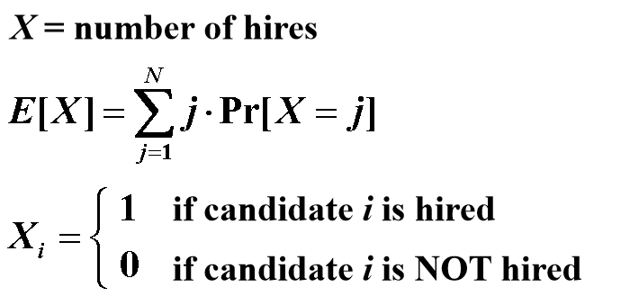
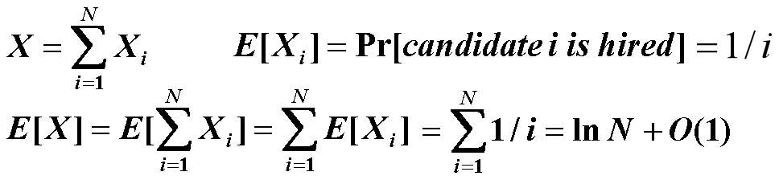
因此雇佣人数的期望值是
实际上如果对最开始算法中的数组C进行随机的排列后再继续执行就可以达到这种效果
随机排序算法

声明：假设所有优先级都是不同的，则排列排序产生输入的统一随机排列
在线雇佣问题
思路: 先面试前k个不录取，在后面的N-K个人中选出第一个比前K个最高分要高的
- 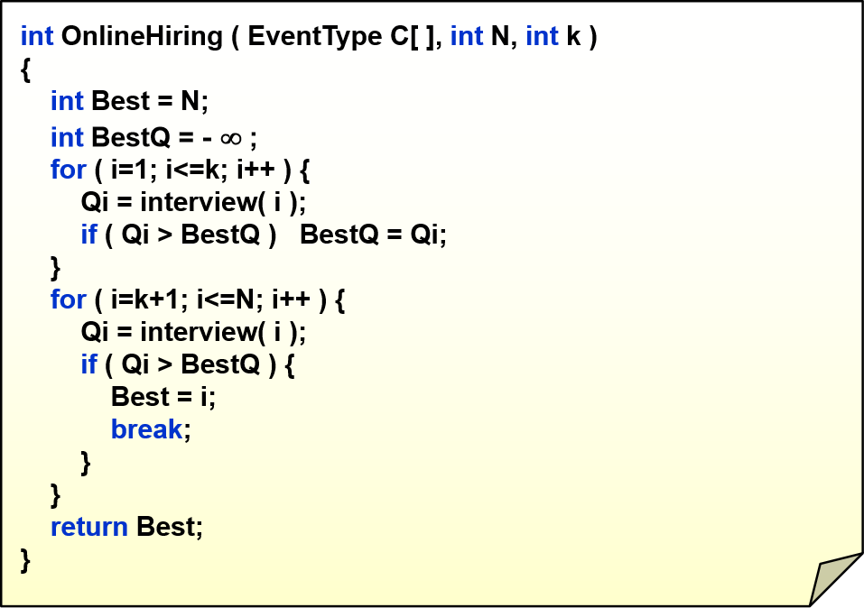
计算最合适的 k 值
记Si为第i个人被录取的概率，则需要满足第i个人是得分最高的并且第k+1到i-1个人都没有被录取
- 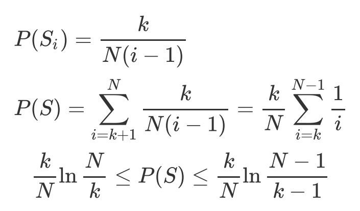
- 其中第i个人的得分是最高的概率是
- 之后用求导的方法可以得到最合适的k值，应该是N/e(e是自然对数的底数)
快速排序
确定性的算法中，快排最差的时间复杂度是
假设每个输入置换的可能性相同时，平均的时间复杂度是
随机选择一个位置作为pivot
central splitter：将数组分成两段的pivot并且每段至少是 n/4
Modified Quicksort：在开始递归之前选择出一个中心分割点(central splitter)
在找到中心分割点之前，所需的预期迭代次数最多为2次
最终随机选择pivot的快速排序的复杂度是
并行算法(Parallel Algorithms)(后面再来)
并行性
机器并行性(Machine parallelism)
处理器并行性(Processor parallelism)
管道系统(Pipelining)
- 一个指令接一个指令进行
超长指令字（Very-Long Instruction Word, VLIW）
并行算法
描述并行算法的两个经典模型
并行随机存取机（Parallel Random Access Machine, PRAM）
- 单指令多数据流的并行模型
Work-Depth (WD)
两种并行算法模型
Parallel Random Access Machine(PRAM)
多个处理器使用共享的内存，因此每个处理器中间有读写的过程，每个操作消耗单元时间访问
定义：read/write/coputation均需要消耗单元时间访问(unit time access)
例子：
处理器
- 取出a
- 取出b
- 计算a+b
- 将 a + b 的结果写入c
解决访问冲突的办法
Exclusive-Read Exclusive-Write, EREW：既不能并行读，也不能并行写
Concurrent-Read Exclusive-Write, CREW：可以并行读但不能并行写
Concurrent-Read Concurrent-Write, CRCW：可以并行读写
并行读写的规则
任意规则(Arbitrary rule)
优先级规则
- 根据优先级进行写入
通用规则
- 如果所有处理器都试图写入相同的值，只需确保写入其中一个值就行了
用PRAM计算n个数的和
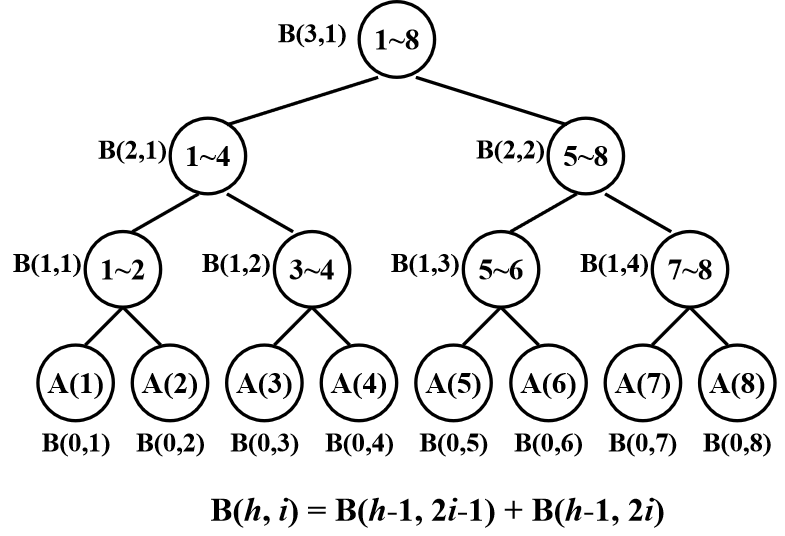
从最底层开始，每个processor分别处理
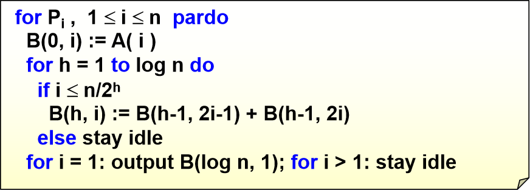
注意：
- 上面带有pardo的循环指的是用不同的处理器进行，而不是循环进行
- 在PRAM模型中，在后期会有很多处理器被浪费
时间:
缺点
- 不知道当处理器不同时会如何影响我们的算法
- 完全指定给处理器的指令分配需要一定的详细程度，这可能是不必要的
Work-Depth(WD)算法
在WD中，每个时间单元由一系列同时执行的指令组成；指令序列可以是任何数量的
用WD算法计算n个数的和，可以发现计算n个数的和的操作总数变少了
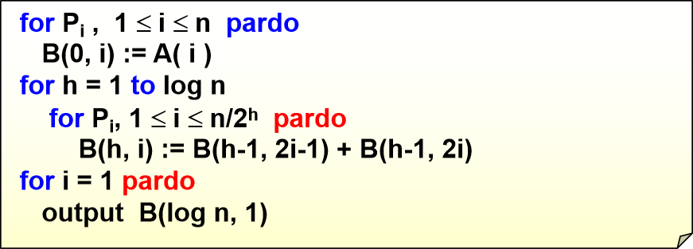
- 在WD算法中，在所有n>=1的时候添加pardo，分配相应的处理器进行处理，避免了处理器的浪费
W(n) 次操作和 T(n) 的时间
评定平行算法性能
Work Load 操作的总数量 W(n)
- 直接计算需要多少次并行操作即可
最坏运行时间 T(n)
P(n)=W(n)/T(n) 个处理器和消耗 T(n) 时间 (on a PRAM)
W(n)/p 使用任意 p <= W(n)/T(n)) 数量的处理器(on a PRAM)
消耗 W(n)/p+T(n) 时间，使用任意 p 数量的处理器(on a PRAM)
以上几条都是渐进等价的，因此只需要用W(n)和T(n)来分析并行算法的性能
- 注意T(n)包含了输入输出的时间，以1计算
WD-presentation Sufficiency(充分性) Theorem
- 在WD模式中使用了
- 在WD模式中使用了
Prefix Sum
定义C与B的关系如下，B为计算n个数的和中所用的B
xxxxxxxxxxif ( i==1 )C(h, i) := B(h, i)if ( i%2 == 0 )C(h, i) := C(h+1, i/2)if (i%2 == 1 && i != 1)C(h, i) := C(h+1, (i-1)/2) + B(h, i)伪代码如下所示
- 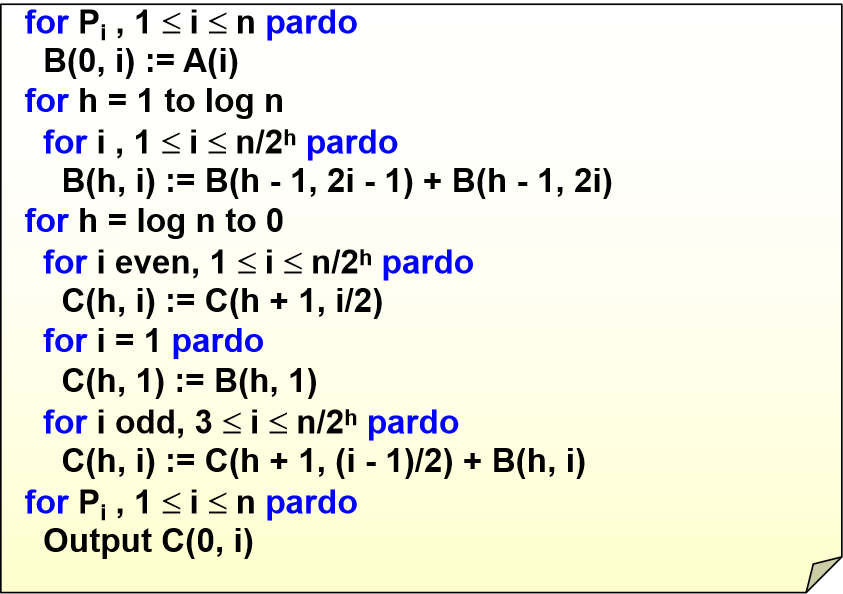
时间：
数组归并
将两个单调不减的数组A,B合并成两个
简化一下问题，m=n，并且A,B中的元素各不相同，log n是整数
分割法 Partitioning Paradigm
分割成若干个小问题，并行执行
引入RANK(j,A)表示B[j]元素位于A的哪两个元素之间，分别计算A和B的所有RANK，然后采用如下方法归并
- 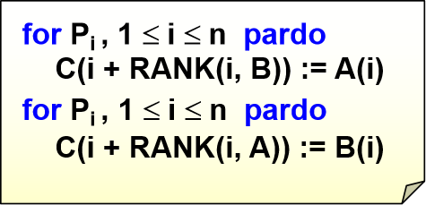
计算RANK使用二分查找，可以使时间复杂度变成log n级别
本算法中
传统的串行算法：T(N)和W(N)都是 O(n+m) 级别
新算法：parallel ranking
- 假设n=m并且数组严格递增
- 步骤一：令
- 步骤二：Actual Ranking 有2p个规模为O(log n)的子问题，所以总的时间复杂度还是log n，但是work load变成了O(n)级别
- 即
找最大值
把求和算法中的+改成max
比较每一对
- 时间
- 时间
双对数算法
随机算法，高概率使得
外部排序(External Sorting )
为什么不能直接在磁盘中使用快速排序
需要用O(1)的时间从内存中获取数组中的一个元素a[i]
还需要在硬盘中做如下操作
- 找到track
- 找到sector(扇区)
- 找到a[i]并传输
因此我们一般使用归并排序进行处理
外部排序算法1(不考虑并行处理)
假设内存一次能够处理M = 3条记录
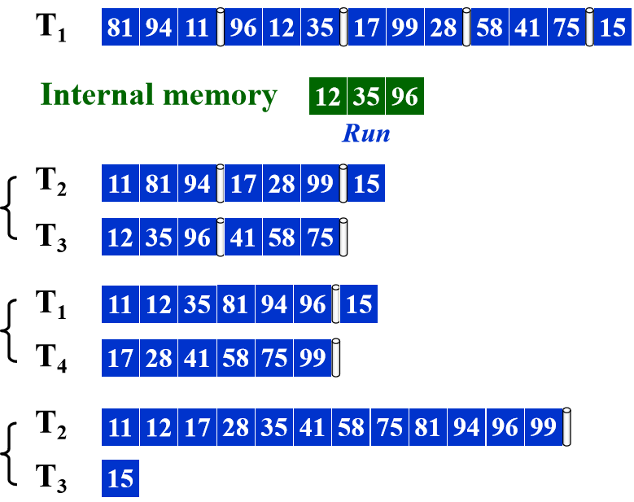
考虑上方的外部排序过程
T1为磁盘中原始的序列
每次从T1读取3条记录到内存中，并在内存中对其进行排序(内部排序算法)
将排序好的3条记录轮流写入T2、T3中，重复以上过程直到T1中的记录被完全读取为止
- 该过程被称为run，在本题中run的次数 = 5
上面的过程为一次pass，最终得到的T2、T3的结果如图所示
之后对T2和T3进行归并排序
具体的排序方式为
先分别从T2、T3中读取一条记录A和B
在内存中比较两条记录，将比较小的记录写入T1中(假设是A被写入)
之后从T2中再读取一条记录，重复2过程直到T2和T3中的两条有序序列都已经被写入T1中
之后对T2和T3的剩余有序序列也进行如上操作
- 注意要轮流写入T1和T4中，这样便于下一轮的比较
最终得到的结果如T1和T4所示
之后对T1和T4进行排序，具体过程同第5步，最终得到一条有序的序列
在该算法的过程中，passes的数量为 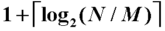 ，其中1为最终将两个T中归并到一条的过程(如上题中的T2和T3的最终归并，在图中没有体现出来)，剩余的式子为归并过程中进行的passes数
外部排序中需要考虑的问题
Seek time
- 为O(number of passes)
一个块记录的读写时间
内部排M条记录所需要的时间
- M为内存能够容纳的最大记录数
将N条记录从输入缓冲区合并到输出缓冲区的时间
由于计算机可以并行执行I\O和CPU处理，因此可以对上面的外部排序算法进行优化
外部排序算法2—k-way归并
假设内存一次能够处理M = 3条记录，那么此时我们可以进行k = M = 3 路排序
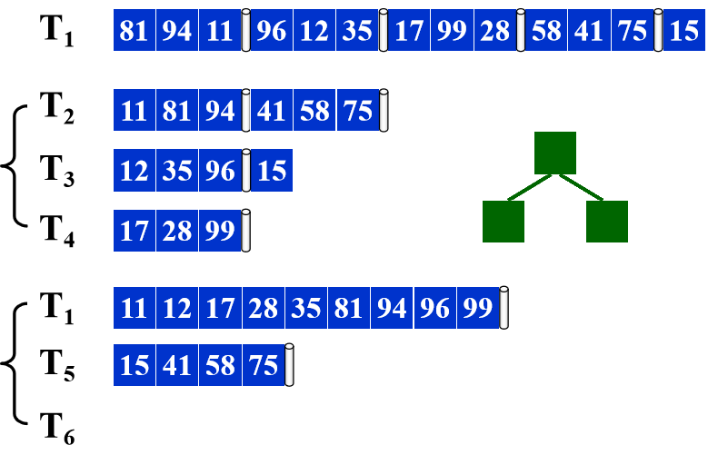
k路排序最开始的过程类似外部排序算法1，不同之处在于轮流写入k条磁带中而不是2条磁带
k-way排序pass的过程也与算法1类似，不同点在于每次内存中存在k个记录(1条磁带1个)，然后在内存中进行比较，将最小/最大的记录写入磁带，之后从被写入的记录原先所在的磁带中读取下一条记录，之后重复上面的过程
该算法passes的次数 = 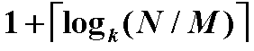 缺点是需要
如果利用并行操作处理k-way归并则需要
外部排序算法3(Polyphase Merge)
该过程看PPT实在点，难以描述
定理：如果runs的数量是斐波那契数Fn，则最好的划分他们的方式是将他们的数量划分成Fn-1和Fn-2, 此时多项归并只需要
外部排序算法4(Replacement selection)
对于初始的第一条磁带生成多条磁带的方法进行再考虑
假设M = 3
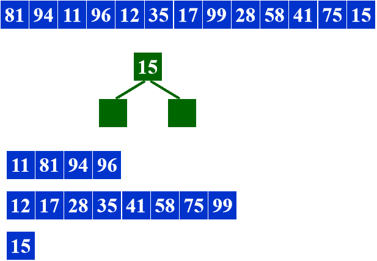
如上图所示，记录上一次输出到磁带中的值，每次在读取一个新值到缓冲区的时候判断该值是否小于上一次输出的值，如果是，则做标记，这个值暂时不参与排序，直到缓冲区中在这个值之前的所有值都被输出后，才开始处理这个标记即之后的值，从这个被标记后的值开始的所有值都需要被输出到一个新的磁带中
在这个算法中，平均一条磁带的长度 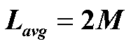
当输入经常是已经排好序的时候功能很强大
如何最小化归并时间
假设我们有 4 个长度分别为 2,4,5,16 的 runs，我们如何安排合并以获得最小的合并时间？
可以使用霍夫曼树
利用霍夫曼树的性质，先对重读最小的树进行归并，然后依次进行
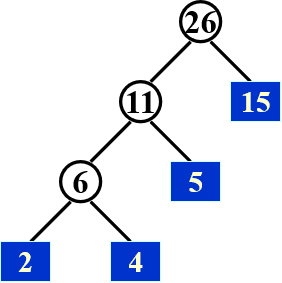
Total merge time =